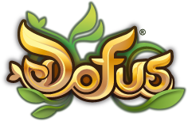
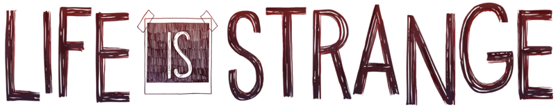
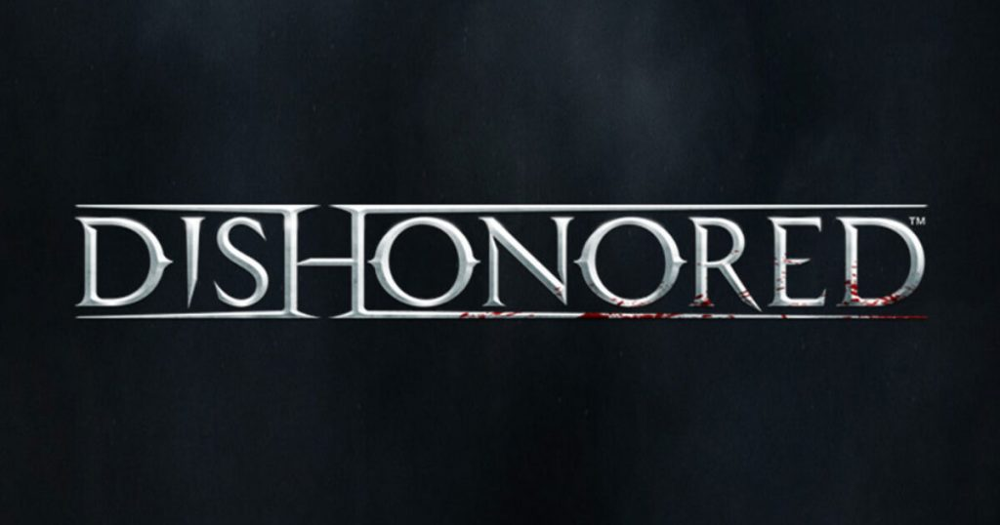
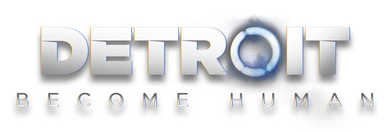

Chiffre d'affaires
En 2019, Ankama a été le studio le plus rentable, avec plus de 28 millions d’euros de revenus, tandis que les 3 autres sont entre 12 et 14 millions. Malheureusement, Ankama games n’a pas communiqué sur les autres années mais le studio reste clairement au-dessus au vu du modèle économique de ses jeux qui permet un chiffre d’affaires constant (plus de 25 millions d’euro en 2015 également).
Si les trois autres entreprises ont des chiffres d’affaires si proches, c’est dû à un fonctionnement assez similaire dans la production des jeux avec un à la fois, puis on passe au suivant, et cela en plus de partager des structures similaires dans leur fonctionnement. Cependant on peut quand même remarquer l’évolution du chiffre d’affaires suite à la sortie de gros titres.
Lorsqu’on regarde l’évolution des chiffres d’affaires des différents studios, on remarque des pics suites à la sortie de jeux assez appréciés (comme Detroit Become Human, les jeux Wolfenstein et Life is Strange 2 produits respectivement par Quantic Dream, Arkane et Don’t Nod). Ankama, fort de ses jeux à services (achats intégrés en jeu) écrase cependant la concurrence avec ce modèle économique.
Cette différence de modèle économique est aussi visible dans le nombre d'employé.
Nombre d'employés
Comme toutes entreprises florissantes, nos quatre entreprises de jeux vidéo ont connu une augmentation de leur effectif au cours du temps (à l’exception d’Ankama ou les statistiques sont introuvables à cause de leur manque de communication et de transparence). Il est possible de constater que l’évolution pour Arkane et Don’t Nod est lié à la production des mêmes titres responsable de l’augmentation de leur chiffre d’affaires. L’évolution de Quantic Dream est plutôt liée à leur prochain projet particulièrement ambitieux, Star Wars Eclipse.
Cependant, si le nombre de salarié n’est pas le même, c’est aussi le cas du salaire.
Salaire d'un game designer
Comparé au salaire moyen d’un game designer français (débutant et expert compris) qui est d’environ 30 600€ brut par mois, nous pouvons constater que Arkane Studio est Dont Nod Entertainment sont dans la moyenne voir un peu plus.
En revanche, Quantic Dream et Ankama Games payent largement moins bien ses salariés, à un point ou le salaire est comparable à celui d’un débutant (environ 24 000€ brut par an). Et ce constat s’applique à la quasi-totalité des métiers, même si ces statistiques ne sont pas présentes sur le rapport.
Cependant, ces deux entreprises sont les plus importantes parmi les quatre présentées, et comme nous avons pu le constater précédemment, Ankama est la plus lucrative tandis que Quantic Dream est celle qui a eu la plus grosse montée récente.
Cette "sous-traitance " amène un mécontentement important des employés envers les PDG et les entreprises…
Satisfaction des employés
Il est assez prévisible de voir qu’Ankama, en étant la boite avec les salaires les plus bas, est aussi la moins bien noté et recommandée. Ce qui est un peu plus surprenant sont les retours sur Quantic Dream, qui rivalise avec Arkane Studio, bien que les salaires soit équivalent à Ankama.
Don’t Nod fait un moins bon score que ces deux derniers, ce qui implique une moins bonne ambiance de travail chez eux. Une potentielle explication pour les mauvais scores d’Ankama et Don’t Nod vient potentiellement des crunch, des rushs forcés peut avant qu’un jeu sorte, cependant il faut noter qu’Ankama est bien plus sujet à cette pratique, car les grosses mises à jour de leurs MMO sont bien plus fréquentes qu’une sortie de jeu.
Cependant, les studios essayent d’agir, notamment sur le domaine des inégalités.
|
Ankama Games |
Arkane Studios |
Don't Nod Entertainment |
Quantic Dream |
| Indicateur relatif à l'écart de rémunération |
34/40 |
38/40 |
39/40 |
34/40 |
| Indicateur relatif à l’écart de taux d’augmentations individuelles |
35/35 |
35/35 |
35/35 |
35/35 |
| Indicateur relatif au % de salariées ayant bénéficié d’une augmentation dans l’année suivant leur retour de congés maternité |
15/15 |
15/15 |
15/15 |
14/15 |
| Indicateur relatif au nombre de salariés du genre sous représenté parmi les salariés ayant perçu les plus hautes rémunérations |
5/10 |
5/10 |
0/10 |
10/10 |
| Index d'égalité professionelle total |
89/100 |
93/100 |
89/100 |
93/100 |
Egalité homme-femme
Les 4 entreprises font un score particulièrement honorable, cependant on voit des failles chez Ankama Games et Quantic Dream dans l’écart de rémunération entre les sexes, bien plus importantes que chez Arkane et Don’t Nod, mais aucun n’atteint une égalité parfaite sur ce point.
Pour ce qui est des augmentations individuelles, on a un score parfait global, ce qui est excellent, ainsi que pour l’augmentation des femmes à leur retour de congés maternités, hormis un léger faux pas chez Quantic Dream. Ce n’est cependant pas le cas de la parité au niveau des plus haut salaires, là où seule Quantic Dream fait un score plein. Arkane et Ankama peinent à avoir la moyenne, tandis que Don’t Nod n’inclus aucun membre du genre sous représenté dans les employés les mieux payés.
Concrètement, on voit un clair effort des studios sur les augmentations de salaires, avec une égalité parfaite entre les deux sexes, ainsi qu’après les congés maternités. Cependant, ce n’est pas aussi beau du côté des salaires de base, avec un écart bien réel, mais aussi une difficulté à ne pas placer que des hommes parmi les employés les mieux payés de la société.
Malgré un effort visible, il reste encore du chemin à parcourir sur la route contre les inégalités pour les 4 entreprises.
Popularité
En termes de renommée, on note vraiment une différence entre les 4 studios et l’approche du public quant à leurs jeux.
Arkane Studios possède une certaine renommée en tant que créateur de Dishonored, un jeu encensé par la critique à sa sortie, mais qui a eu du mal à trouver un public. Cependant, leurs jeux suivants se sont souvent avérés corrects voire sympathiques tout au plus, ce qui leur permet certes de continuer de financer leurs employés et leurs futurs projets, sans pourtant gagner en popularité auprès du public.
Don’t Nod est déjà plus connu grâce à Life is Strange, qui fut un vrai succès à sa sortie, sauvant le studio après l’échec de leur jeu précédent. Ayant également trouvé leur style de jeu dans ce succès, ils continuent de produire des aventures narratives comme le jeu qui les a fait connaitre.
Pour Quantic Dream, le studio a reçu le plus important boost de toutes avec le succès retentissant de Detroit : Become Human, les poussant à s’engager sur le projet ambitieux d’un jeu Star Wars. Le studio avait produit moins de jeu que ses deux rivaux, mais ce sont des jeux qui étaient déjà considérés comme de bien meilleure qualité que les productions des autres studios.
Il est important de noter que la renommée de ces trois studios n’est pas limité à la France, mais est réellement internationale, à l’inverse d’Ankama Games qui est un succès vraiment localisé dans son pays. La preuve avec les serveurs de leur MMO, certains internationaux, mais d’autre français uniquement. Ce focus permet d’avoir une vraie communauté en France, mais une renommée internationale assez faible.
Cependant, cette renommée n’est pas propre à leurs jeux, il ne faut pas oublier qu’Ankama Games n’est qu’une branche d’Ankama, qui possède notamment un studio d’animation qui a créé le dessin animé Wakfu, qui peut être une première introduction à l’univers commun entre la majorité des jeux du studio. C’est cet univers commun qui a également permit à Ankama de se fonder une communauté particulièrement fidèle au fil des ans.



